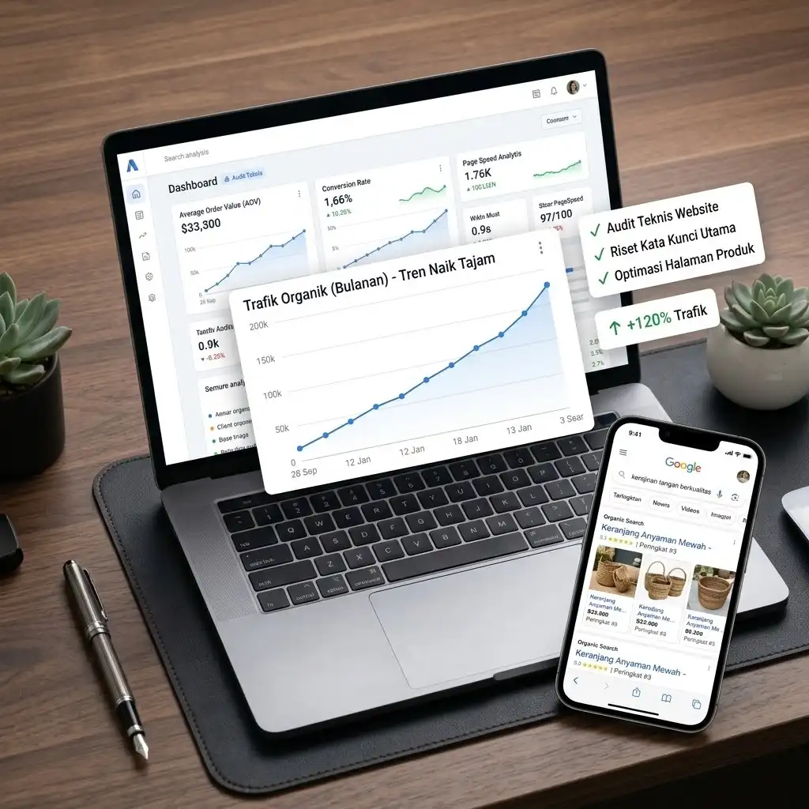

SEO · Toko Online
Pelajari layanan SEO
Dari Bergantung Iklan Menjadi Dikenal di Hasil Pencarian
- Tantangan
- Toko online bergantung pada iklan berbayar, sementara halaman produk dan kategorinya jarang muncul di hasil pencarian Google.
- Strategi
- Audit teknis website, riset kata kunci, optimasi halaman produk dan kategori, serta perbaikan kecepatan halaman.
+120%Trafik organik
Top 10Kata kunci utama
6 bulanPeriode kerja